This exam covers waves, light and heat, climate science and electricity, and scientific method.
Section A: Multiple choice (21 marks)
All of the following descriptions of waves are correct except:
A violin string vibrates with a period of 0.4 s, and the wavelength of the vibration on the string is 10.9 cm. The speed of the vibration is closest to:
v = λ / T = 10.9 ÷ 0.4 = 27 cm/s.
Which of these light sources is incandescent?
Which part of the eye helps focus light onto the retina?
Which option correctly matches materials with their optical properties (opaque; transparent; translucent)?
Which type of light has the highest frequency?
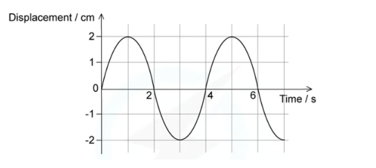
The period of the wave above is closest to:
Which type of radiation is absorbed and emitted by greenhouse gases?
Which is not an accepted, observed impact of the enhanced greenhouse effect?
Extra CO2 dissolving in the oceans increases their acidity.
Which best describes the electrical output and device needed in the school's photovoltaic solar system?
Which best describes current in a circuit?
Which statement about a static electricity demonstration is correct?
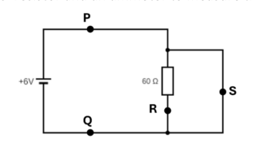
Which gives the correct positions for a voltmeter to measure the voltage across the 60 Ω resistor and an ammeter to measure the total current?
Which best describes a variable in a scientific investigation?
When choosing equipment to collect data, what is essential to ensure reliability?
Why is it important to control certain variables in an investigation?
If a conclusion contradicts the original hypothesis, what should a scientist do next?
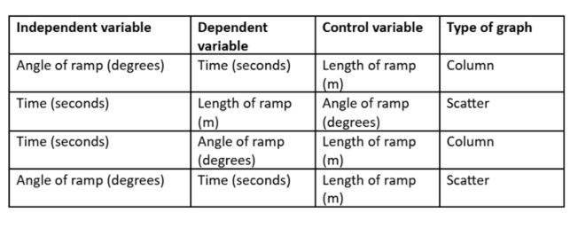
An experiment investigates the effect of the angle of a ramp on how long a toy car takes to roll down it. Which option gives the correct IV, DV, controlled variable and type of graph?
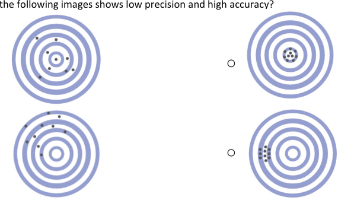
Which target shows low precision and high accuracy?
Questions 20 and 21. An experiment measured how far snails move in a night. The graph shows the total distance travelled (m) against the time spent moving (hours). The longest a snail moved for was 11.2 hours.
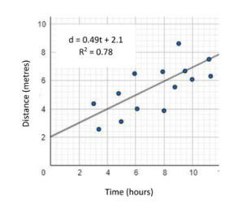
Which best describes the correlation between the two variables?
What is the predicted travel time for a snail that moved 5.6 m?
5.6 = 0.49t + 2.1, so t = 3.5 ÷ 0.49 = 7.1 h.
Section B: Short answer
Question 1 (6 marks)
The diagram shows a sound wave travelling through air. The speed of sound in air is 340 m/s.
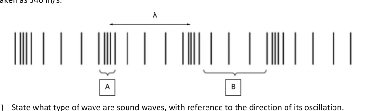
- Sound waves are waves.
- The region labelled A is a .
- The region labelled B is a .
Find the wavelength of the sound if its frequency is 980 Hz.
λ = v / f = 340 ÷ 980 = 0.35 m.
If the frequency is halved to 490 Hz, what happens to the wavelength?
Question 2 (4 marks)
Trent is using a yellow LED light and a cyan LED light for a school production of The Lion King. On the day, the yellow light breaks. In the store he finds red, green and blue LED lights, and decides to combine two or more of them to replace the yellow light.
Which combination of coloured lights can replace the yellow light?
A performer wearing a red costume steps onto the stage while the cyan light is shining. Describe how the red costume looks under cyan light, and explain why.
It looks dark (black) (1 mark). Cyan light is made of blue and green only; the red costume only reflects red, so it absorbs the blue and green and reflects nothing (1 mark).
Question 3 (4 marks)
Curtis, Alexis and Dominik shone a laser through a lens along 2 paths and traced them on graph paper.
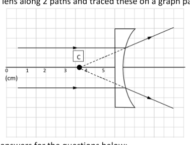
- The lens is , also known as .
- Point C is the .
- The focal length of the lens is about cm.
Question 4 (3 marks)
The thermal conductivity of various materials:
| Material | Thermal conductivity (W/m/K) |
|---|---|
| Gold | 314 |
| Aluminium | 205 |
| Steel | 50.2 |
| Ice | 1.6 |
| Glass | 0.8 |
| Diesel oil | 0.13 |
| Water | 0.6 |
| Wood | 0.12 |
| Air | 0.024 |
Generally, solids conduct heat better than liquids, and liquids better than gases.
Using the particle model of thermal energy, explain why solids conduct heat better than liquids.
- Conduction is the transfer of heat by the vibration of particles in contact with each other (1 mark).
- The particles of solids are packed more closely than those of liquids, so heat (vibrations) is passed on more effectively (1 mark).
- The particles of liquids move around more freely, which disrupts the transfer of heat (1 mark).
Explain why extensive deforestation leads to a net increase in greenhouse gas emissions. Refer to the chemical processes involved.
Deforestation removes trees, so there is less photosynthesis to take CO2 out of the air (1 mark). So more carbon dioxide (a greenhouse gas) stays in the atmosphere overall; burning or decay of the cleared trees also releases CO2 (1 mark).
Explain why electricity generated by a wind turbine is considered a renewable energy source.
Renewable energy comes from a source that won't run out, or is replaced quickly by natural processes, without affecting future generations (1 mark). Wind is part of a natural weather process, so it is continuous (although not always available) (1 mark).
Albedo describes how reflective the Earth's surface is. White polar ice floating in the ocean has a high albedo; darker ocean has a low albedo. High albedo reflects more solar energy, keeping the surface cooler; low albedo absorbs more, warming it. Explain how rising atmospheric and ocean temperatures could lead to a positive feedback loop linked to global warming.
Step 1: warmer oceans melt sea ice, which reduces the albedo (1 mark). Step 2: lower albedo means more solar energy is absorbed, further warming the oceans, which melts more ice: this reinforces step 1, a positive feedback loop (1 mark).
A small wind turbine operates at 5750 W with an output voltage of 230 V. Calculate the output current.
I = P / V = 5750 ÷ 230 = 25 A.
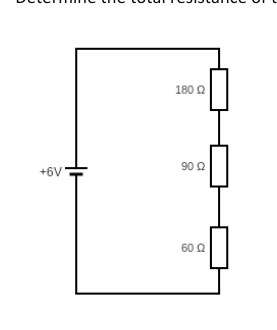
Find the total resistance of the circuit above.
180 + 90 + 60 = 330 Ω.
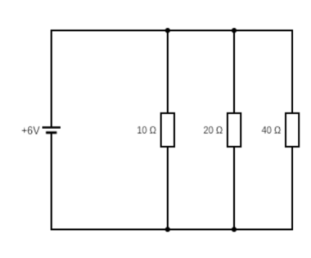
Find the total resistance of the circuit above, to 1 decimal place.
1 / R = 1/10 + 1/20 + 1/40 = 0.175, so R = 5.7 Ω.
Draw (on paper) a circuit with: a globe and a 180 Ω resistor in parallel; a 6 V DC power supply; an ammeter measuring the total current; and a voltmeter measuring the voltage across the globe. Describe it, then compare.
The 6 V supply with an ammeter in the main wire (before the branches split), so it measures the total current; two parallel branches, one with the globe and one with the 180 Ω resistor; and the voltmeter connected across the globe. 1 mark each for the parallel branches, the ammeter position and the voltmeter position.
Question 12 (3 marks)
The graph shows voltage against current for an unknown ohmic device.
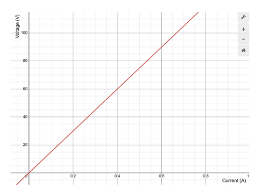
Find the resistance of the device.
R = gradient = 60 ÷ 0.4 = 150 Ω.
Describe a line on the same graph for a device with a lower resistance.
A straight line through the origin that is less steep (lower gradient) than the original line.
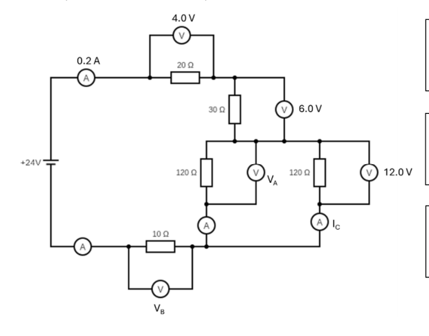
Referring to the circuit above, state the values:
VA = V
VB = V
IC = A
The two 120 Ω resistors are in parallel, so VA = 12.0 V. VB = IR = 0.2 × 10 = 2.0 V. The 0.2 A splits equally between the two equal 120 Ω branches, so IC = 0.1 A.
Question 14 (5 marks)
Students investigated the growth of rye grass in different soil types (clay, sand, loam and peat). Method:
- Label each pot with its soil type.
- Fill each pot with an equal volume (e.g. 500 mL) of its soil type.
- Plant some rye grass seeds in each pot.
- Water each pot lightly to keep the soil moist.
- Place all pots where they get the same light.
- Water the pots regularly to keep them moist.
- Measure and record the grass height with a ruler at regular intervals (e.g. every 3 days) for a set time (e.g. 3 weeks).
| Soil type | Average height of rye grass |
|---|---|
| Clay | 8.9 |
| Sand | 12.4 |
| Loam | 9.9 |
| Peat | 10.5 |
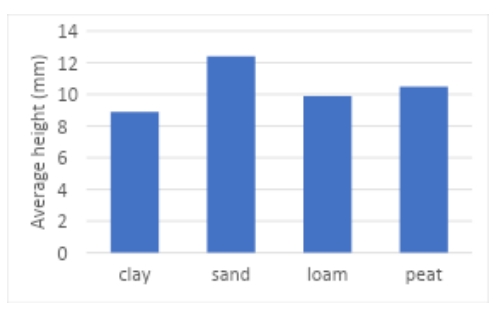
- The independent variable is .
- The dependent variable is .
State a variable that was not controlled in the method.
The number of seeds planted, or the amount of water given to each pot.
Identify an error the students made when presenting their results.
Any one: no units in the table; a missing label on the graph; no title on the graph.
How could the independent variable be changed so that it is a continuous variable?
Instead of soil type, change something measurable such as the amount of water, the temperature or the light level.
Question 15 (8 marks)
Students investigated how temperature affects the rate of growth of mould. In warm, moist environments, mould spores germinate and form visible colonies, which spread as the mould uses up the nutrients around it. The growth rate is r = change in mould size ÷ time elapsed.
Independent variable:
Dependent variable:
Write an appropriate research question for the experiment.
What is the effect of temperature on the growth rate of mould?
The risk assessment included this hazard: "ALLERGY ALERT. Some people are allergic to wheat. May be toxic, due to chemicals produced by mould."
State one safety measure the students should use.
Wear gloves (or wash hands after the experiment); wear safety goggles or a mask; keep the plates sealed.
The students measured several colonies at each temperature:
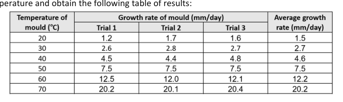
On graph paper, plot the average growth rates, with axis titles and units, and draw a smooth trendline. Describe your graph, then compare.
Temperature (°C) on the horizontal axis and average growth rate (mm/day) on the vertical axis (1 mark); points plotted correctly (1 mark); a smooth curve that gets steeper and steeper as the temperature increases (1 mark).
Using your trendline, predict the growth rate of mould at 46 °C.